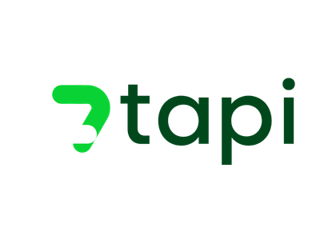
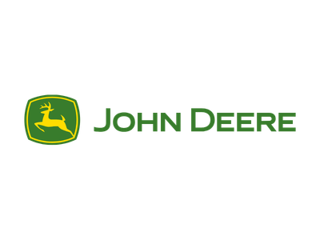
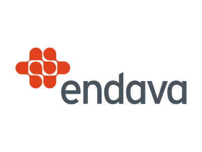
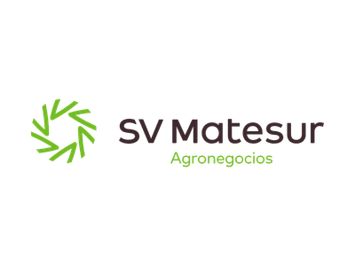

¿Cómo medir si tus líderes saben gestionar emociones? Mirá cómo está tu equipo de RRHH.
Educación emocional y psicología preventiva para crear ambientes de trabajo que mejoren la vida de las personas.
Conocé cómo trabajamosAcompañar a una organización no es lo mismo que acompañar a una persona.
Un taller, una sesión, seguimiento cercano alcanzan para acompañar a alguien. Para acompañar a cientos o miles, no: el modelo individual no escala. Por eso construimos una estrategia en 4 etapas encadenadas, centrada en entrenar a los líderes —los únicos que ya están al lado de cada persona todos los días— y apoyada en iniciativas complementarias que anclan el cambio en la cultura.
-
Abrir la conversación
Cuando hablar de emociones todavía es tabú en la empresa, cualquier programa rinde menos.
Por eso muchos equipos eligen empezar por acá: charlas de awareness y sesiones temáticas que mezclan storytelling, vulnerabilidad y datos para dar permiso a nombrar lo que antes no se decía. Con la conversación abierta, la siguiente etapa —formar a los líderes— llega con mejor terreno.
-
Entrenar a los líderes
No podemos estar al lado de cada persona en una organización de miles. Pero sus líderes sí.
La solución fue entrenarlos para que sean ellos quienes hagan el seguimiento emocional del día a día. Les damos un método compartido —el Método Kind— que trabaja sobre el individuo, su equipo y la organización. Dejan de gestionar "a su manera" y pasan a ser el canal del bienestar. Pero mientras los líderes aprenden, el desgaste emocional sigue acumulándose en alguien. Y ese alguien es Recursos Humanos.
-
Proteger a RRHH
El indicador de que los líderes todavía no tienen herramientas emocionales es que RRHH se empieza a quemar.
Reciben quejas, broncas y frustración de todas las áreas sin formación para procesarlo. Su rol se desdibuja: de función estratégica pasan a atención al cliente emocional. El HR Help Kit les da un sistema de autoprotección, scripts para conversaciones difíciles y límites claros. Con RRHH cuidado y los líderes formados, los cambios empiezan a volverse permanentes. Pero una cultura no se transforma con los que ya están: se transforma con los que vienen.
-
Sostener la cultura
Un programa puede cambiar un clima; sólo el tiempo cambia una cultura.
Capacitamos al resto de la estructura —los empleados sin jerarquía, los líderes del mañana— con sesiones regulares, experiencias de bienestar y programas de cambio cultural sostenidos durante meses. Así los próximos líderes ya llegan al puesto con herramientas emocionales. La cultura deja de depender de un proveedor externo. Se sostiene sola.
-
El ciclo se cierra
El recorrido vuelve a la Etapa 1. Nuevos líderes, nuevos equipos, nuevos desafíos. El proceso es continuo — pero cada vez parte de una base más sólida.
El equipo detrás de Sentir Mindfulness.
Lorena Campos
Lic. en Psicología · Esp. en corriente Cognitiva · Master en Mindfulness (U. de Zaragoza). Su mayor experiencia la desarrolló en RRHH, acompañando a multinacionales en gestión de procesos soft. Combina profundidad clínica con la mirada del negocio para diseñar intervenciones que conectan emocionalmente y generan cambios concretos.
LinkedIn ↗Lucila Campos
Lic. en Psicología · Esp. en corriente Cognitiva · Master en Mindfulness (U. de Zaragoza). Empezó en el ámbito clínico y expandió su camino hacia el mundo organizacional. Integra mindfulness como herramienta concreta para el día a día laboral, promoviendo entornos más conscientes y equilibrados.
LinkedIn ↗Agustín Milesi
Master en Business & Technology (U. de San Andrés). Se especializó en UX Strategy. Fundó y lidera empresas en hospitality y hoy forma parte de Sentir Mindfulness aportando visión estratégica, innovación y diseño de experiencias.
LinkedIn ↗Empresas Kind
Ya promueven prácticas de bienestar en sus equipos de trabajo.




Contanos qué necesita tu equipo.
Respondemos en menos de 24 horas con una propuesta a medida.